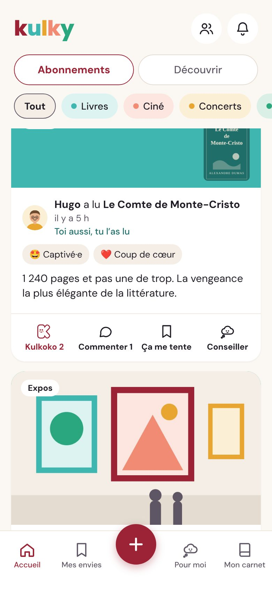
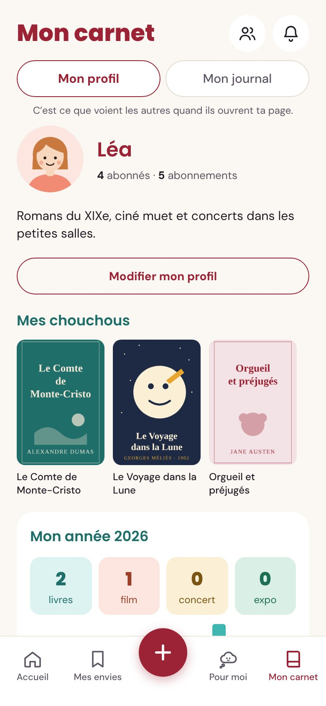
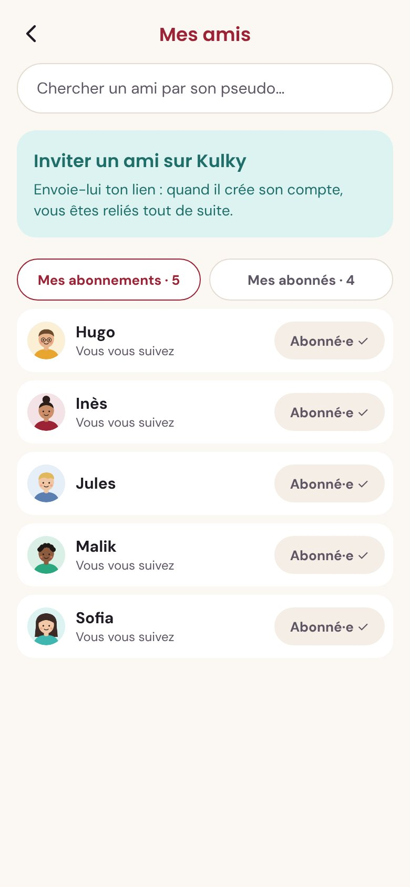

Tes conseils font du chemin
Tu conseilles un livre à Sofia, elle le passe à Hugo, qui le passe à Malik. Kulky te montre jusqu’où ton conseil a voyagé.
Vis-le, enregistre-le, partage-le. Kulky garde la trace de ce que tu lis, vois et écoutes, et le fait voyager jusqu’à ceux que tu aimes.
Une soirée avec Léa : elle termine Les Misérables, que son amie Sofia lui avait conseillé.
Pas de note sur 5, pas de classement. Juste ce que la culture t’a fait vivre, et les gens avec qui tu la partages.
Tu conseilles un livre à Sofia, elle le passe à Hugo, qui le passe à Malik. Kulky te montre jusqu’où ton conseil a voyagé.
Quand un ami vit la même œuvre que toi, Kulky vous le signale. De quoi lancer la conversation.
Tes amis laissent un mot à une page précise. Tu le découvres seulement quand tu y arrives.
Ton mois le plus culturel, tes coups de cœur, les découvertes faites grâce à tes amis. À partager en fin d’année.



Kulky est gratuit. Crée ton compte en moins d’une minute, et invite tes amis.
Créer mon Kulky

 « La scène de l’évêque… »
« La scène de l’évêque… »